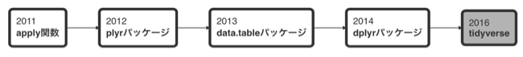
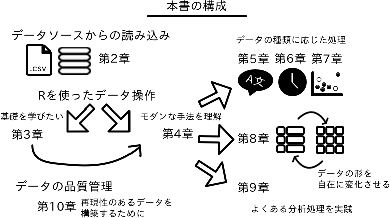

Rによるデータ解析のための前処理
本リポジトリで扱っているRコードは全般的に古い状態にあります。 具体的には、おおよそ2017年時点で書かれたもののため、dplyrやtidyrなどの一部の関数で 現在推奨されていない関数や処理をそのまま使っている箇所があります。 これらの箇所については、順次最新の書き方に修正していきますが、その間、古いコードが混ざります。
まえがき
前処理とR
コンピュータサイエンスの分野に「Garbage in, garbage out(ガラクタを入れればガラクタが出てくる)」という格言がある。これは入力に用いるデータの質が悪い場合に、得られる結果の価値も低くなることを述べている。この言葉は、コンピュータサイエンスだけでなくデータ分析でも言える事柄である。例えばデータの中には入力の誤りや重複が含まれることがある。これらは非意図的に記録された値であり、存在に気づかずに分析を行ってしまうのは危険である。また、記録から漏れた欠損値や他の値と著しく異なる外れ値が含まれる場合、分析結果はこれらの値の影響を受ける。こうしたデータは「ガラクタ」であり、価値の低い結果を生み出す原因となる。こうしたデータは、分析目的やデータ全体を見ながら適切に片付ける必要がある。
データに含まれる「ガラクタ」を処理するとともに、データそのものを綺麗に整える必要がある場合もある。コンピュータの処理は予測される入力値が与えられることにより処理が実行される（簡単な算術演算を行う時に、文字と数値が混在していては出力がエラーになる。予測された入力を元に正しい出力を行う）ため、データは目的の処理を行うために適した形でなければならない。これはデータ分析を行う上で最低限クリアしていなければならない課題である。このような一連の作業は「前処理」や「データクレンジング」と呼ばれ、データ分析を行う際には、大きな役割を担っている。
高価な家具が良質な木材と丁寧な処理によって出来上がるように、データ分析では前処理を通して可能な限り素材となるデータの質を高める必要がある。一方、前処理では不適切なデータが生み出された原因の追求や、データに対して繰り返しの修正を加えるため、本来の目的である解析作業より手間と時間がかかりやすい。したがって、前処理の手順を確立することは作業の効率化につながり、良い分析成果を得ることに繋がるだろう。
データ解析環境であるRは、かつては主に解析やデータのグラフ化に利用され、前処理の作業はAwkなどのコマンドラインツールやその他のプログラミング言語に委ねられることが多かった。またRでデータに対する処理を行なうとしても、apply()やtapply()といったapply族の関数が使い回されていたが、apply族の関数の利用方法にはやや癖があり、初心者には決して易しくなかった。
これに対し、Rでも2012年以降 {plyr}、{reshape2}、{tidyr} といった直感的に使いやすく、データ処理に必要な関数を備えたパッケージが台頭してきた。2014年には{plyr}の後継である{dplyr}パッケージが開発された。{dplyr}パッケージでは、統一的なコードで記述できるようになっており、より柔軟なデータ操作が可能になった。また{dplyr}では、リレーショナルデータベースを扱う関数が用意されており、データの取得から操作までを通して実行する環境が整備されている。このため現在では{dplyr}の関数を前処理や分析結果の整理に用いる方法が広まっている。そして2016年、Hadley Wichkamにより、データ取得およびデータ操作、可視化や統計モデリングの処理を調和的に利用可能にするtidyverseの概念が提唱された。ここにきてRによる前処理から分析結果の実行までの流れは成熟の兆しをみせている。

一方、利用するデータを正確にRで扱えるようにするというのも前処理に欠かせない作業である。これまでデータ分析者はCSVやExcelといったファイルやリレーショナルデータベースのデータ、すなわち表形式のデータを主に扱ってきた。しかし今ではXMLやJSONといった階層構造をもつデータ形式や、NoSQLと呼ばれるデータベースの普及により、これらのデータソースからも柔軟にデータを取得することが求められている。加えて、インターネットを利用して提供されるウェブサイトの情報やウェブAPIを使ってデータを収集する機会も増えている。オープンソースであるRでは、こうしたデータソースの変化にも対応したパッケージの開発が盛んに行われている。Rは高機能なデータ開発環境としてますます多くのユーザーを惹き付けている。
本書では「前処理のためのデータの収集と前処理」をモダンなRの手法で実現する方法を解説する。データの収集と前処理に共通してRを用いることには2つの利点があると筆者は考える。まず分析基盤の統合とRに対する熟練度の向上である。データ解析はRで、前処理は別のツールで行う場合、異なるツールを利用するためにどうしても思考プロセスを切り替える必要が生じてくる。データの収集と前処理がRで実行可能になれば、こうした思考の分断を防ぎ、作業に集中できるだろう。つまり、データの収集と前処理、そして解析をシームレスに実行できるということである。本書を通じて、データ分析に伴なう前処理の負担が少しでも軽減されれば筆者の幸いとするところである。
本書について
本書の構成
本書は、基礎編と実践編に分かれ、9の章から構成される。基礎編では、データ分析を行う上で留意すべき事項の確認から、Rへのデータの読み込み、基本となるデータ操作方法を学ぶ。1章は、Rにおけるデータの扱いの基礎や本書やRでのデータ分析には欠かせないデータフレームについて説明している。2章は、Rへデータを取り込む方法として、テキストファイル、Excelファイル、データベース、ウェブといった主要なデータ取得先を題材として紹介する。続く3章ではtidyverseの思想に沿ったモダンなデータ操作の導入を行う。この章は実践編の各章で重要な事項となる。
実践編では基礎編の内容を踏まえた上で、前処理に必要な処理をデータ型ごとに章を分けて議論する。具体的には文字列と因子について4章および5章で取り上げる。また日付・時間データについて6章で、外れ値や欠損値の処理方法を7章で述べる。8章では、分析を行うのに不適切なデータを整然とした形に修正する方法とデータを自由自在に変形させる方法を学ぶ。続く9章は、これまで扱ってきた内容を振り返りながら、いくつかの例題を提示していく。これらを踏まえ、最終章では実行したデータ操作の再現性確保に必要なデータ管理について議論する。各章は、データ分析で必要となる前処理の時系列を例に沿って構成されており、その意味で、章の順番通りに読み進めることで、データ分析の手順について理解を深めることができるであろう。ただし、各章の内容的にはそれぞれ完結しており、必要な章だけを重点的に読むことも可能なように書かれている。

本書に掲載されたRコードの実行環境は次のとおりである。
- R version 4.1.3 (2022-03-10)
- macOS Monterey 12.3
本書の表記法
本書では、Rのパッケージや関数について、次のように表記している。パッケージはpackage、関数はfunction()としたが、パッケージ間の関数名の衝突を避ける必要がある場合は package::function() と表記することもある。引数は argument のように斜体としている。またRの関数では引数名を省略して実引数を渡すことが可能であるが、複数の引数を取る関数については読者の理解を助けるために引数名を明示した。論理値については TRUE / FALSE とし、省略形の T や F は使っていない。同様に空白値 NULLや欠損値 NAも斜体で表記する。データフレームやベクトルなどのオブジェクトについては、x のように太字で記し、またデータの 変数 は斜体としている。